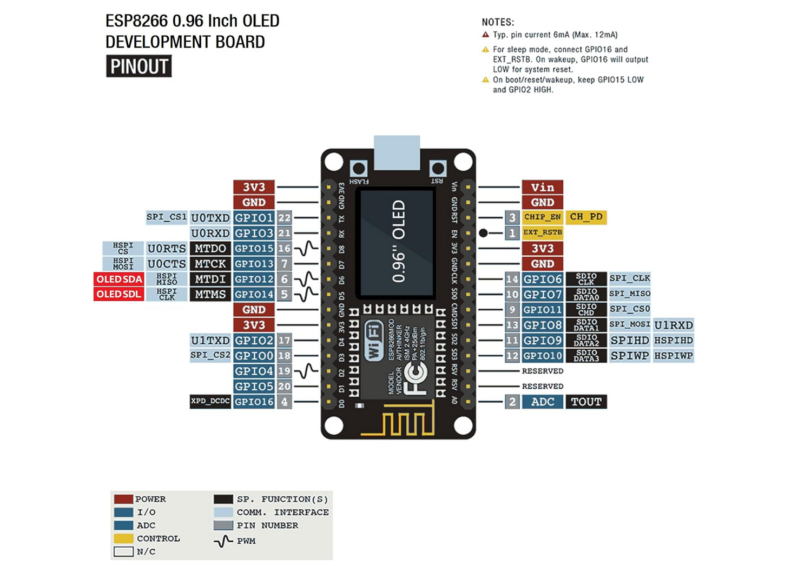
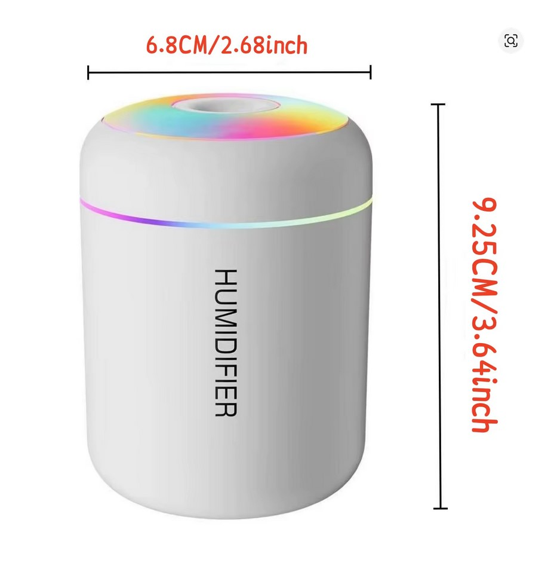

Schematics
Wiring Diagram
Full cabinet wiring — MCU, MOSFETs, AHT10 sensor, OLED display, and power rail.

arachnid_cabinet_wiring_v5 — NodeMCU HW-364A · AHT10 · IRLZ44N ×3 · BC548B · SSD1306 OLED
Division IV · Project Documentation
A WiFi-connected climate controller for four arboreal tarantulas — automated humidity, remote control, and a persistent keeper's log.
Arboreal tarantulas need elevated humidity at night and reliable airflow to prevent stagnant damp conditions. Manual misting is inconsistent, missed feeds go unrecorded, and when you're away there's no visibility into what's happening in the cabinet.
A NodeMCU ESP8266 manages climate via three MOSFET-driven outputs, reads an AHT10 sensor, serves a live web dashboard, and pushes telemetry to ThingSpeak every 20 seconds. A Supabase-backed companion page logs feeding and moult events from any device.
Automation with visibility — a system that handles the climate on a schedule, lets you override it remotely, fails safely when something goes wrong, and keeps a persistent cross-device record of the animals' lives.
Hardware
NodeMCU HW-364A at the core, with an I²C sensor bus shared between the AHT10 and OLED, three logic-level MOSFET outputs, and a 12 V → 5 V SMPS power chain.
Controller
| Board | Chip | Role |
|---|---|---|
| NodeMCU HW-364A | ESP8266 | Sensor reads, control logic, web server, scheduling, ThingSpeak push |
Sensor
| Sensor | Interface | Pins |
|---|---|---|
| AHT10 | I²C | SDA → GPIO12 (D6) SCL → GPIO14 (D5) |
Outputs
| Output | Driver | GPIO | Notes |
|---|---|---|---|
| Fogger | IRLZ44N | GPIO5 (D1) | 5 V ultrasonic fogger |
| Fan | IRLZ44N | GPIO0 (D3) | Boot-sensitive pin — external pull-up; brief LOW pulse before state change |
| Light | IRLZ44N | GPIO4 (D2) | Drives a Sea Monkey air pump — manual 10-min aeration at feeding time |
Display
| Component | Interface | Notes |
|---|---|---|
| SSD1306 OLED | I²C (shared bus with AHT10) | Cycles 6 screens every 10 s |

NodeMCU HW-364A — GPIO pinout reference
Power Chain
Schematics
Full cabinet wiring — MCU, MOSFETs, AHT10 sensor, OLED display, and power rail.
arachnid_cabinet_wiring_v5 — NodeMCU HW-364A · AHT10 · IRLZ44N ×3 · BC548B · SSD1306 OLED
Hardware · Detail

180ML Mini USB Ultrasonic Mist Maker — switch bypass
Bypassing the Onboard Switch
Component: 180ML Mini USB Ultrasonic Mist Maker — generic 5 V USB-powered "mini humidifier / aroma diffuser" type.
Modification: The onboard tactile switch was bypassed so the MCU can toggle the fogger directly. A signal line from GPIO5 (D1) drives the switch line via an NPN transistor (BC548B), pulling it low to simulate a button press. This keeps the fogger's own control board intact while making it fully software-controllable.
Result: Fog on/off is triggered by MCU logic and integrates cleanly into the existing schedule and override flow. The IRLZ44N MOSFET on GPIO5 handles power switching; the BC548B handles the control-board signal line independently.
Firmware
Arduino/C++ on the ESP8266, firmware v2.4. Two independent millis() timers ensure a slow cloud push never delays local sensor reads or device management.
loop() ├── server.handleClient() // web requests, any time ├── every 1000 ms: │ readSensor() │ manageFogger() │ manageLight() │ manageFan() │ updateDisplay() └── every 20 s: pushToThingSpeak() // independent HTTPS push
OLED Display — 6 Screens
Cycles every 10 seconds. Clock on the I²C shared bus alongside AHT10.
| # | Content |
|---|---|
| 1 | Clock — HH:MM:SS |
| 2 | Humidity % — shows ERR on sensor failure |
| 3 | Temperature °C |
| 4 | Fogger — ON / OFF / BLOCKED / OVERRIDE + countdown |
| 5 | Light status |
| 6 | Fan status |
Control Priority Hierarchy
🌫️ Fogger
💨 Fan
💡 Light
Safety Features
Boot Defaults
All outputs set LOW before any other setup code runs.
Hardware Watchdog
8-second timer — if loop() stalls, the board reboots automatically.
Sensor Failure Detection
3 consecutive bad reads blocks the fogger and sets sensorOk: false in the API.
Humidity Hysteresis
Fogger blocked at ≥ 90%, only re-enabled below 85% — prevents rapid cycling at the threshold.
WiFi-Loss Resilience
If WiFi fails on boot, the system continues running on its local schedule with no network connection.
DST / Timezone
POSIX TZ string handles UK GMT/BST transitions automatically. No biannual manual updates required.
Web Interface & API
The NodeMCU serves its own self-contained HTML dashboard at / and a JSON status API. All endpoints include CORS headers for cross-origin access from the GitHub Pages interface.
Endpoints
| Endpoint | Auth | Description |
|---|---|---|
| GET / | None | Self-contained HTML dashboard |
| GET /data | None | Full system state as JSON |
| GET /staticData | None | Fixed fallback JSON for testing |
| GET /toggleFogger | Key | Toggle fogger on/off |
| GET /overrideFogger | Key | 3-minute override on |
| GET /toggleFan | Key | Toggle fan on/off |
| GET /overrideFan | Key | 3-minute override on |
| GET /toggleLight | Key | Toggle light on/off |
| GET /overrideLight | Key | 10-minute override on |
| GET /longOverrideLight | Key | 30-minute override on |
Control endpoints require ?key=YOUR_KEY. Missing or invalid key returns HTTP 403. The HTML dashboard caches the key in localStorage — prompts once, remembers it.
{ "time": "22:14:03", "humidity": 67.40, "temperature": 24.20, "sensorOk": true, "foggerStatus": true, "override": false, "foggerBlocked": false, "lightStatus": false, "lightOverride": false, "fanStatus": false, "fanOverride": false }
When an override is active the response additionally includes remainingTime, lightRemainingTime, or fanRemainingTime in seconds.
Remote Access
| Access | Address |
|---|---|
| Local | 192.168.1.159 |
| Remote | sjfcross.ddns.net |
| DDNS provider | No-IP |
| Port forward | :80 → 192.168.1.159:80 |
Telemetry
Temperature, humidity, and output states are pushed over HTTPS every 20 seconds on an independent millis() timer. A slow or failed push never delays sensor reads or device management — failures are logged to serial and skipped.
Channel Fields
| Field | Data |
|---|---|
| field1 | Temperature (°C) |
| field2 | Humidity (%) |
| field3 | Fogger state (1 = ON, 0 = OFF) |
| field4 | Fan state (1 = ON, 0 = OFF) |
| field5 | Light state (1 = ON, 0 = OFF) |
Residents
All four are arboreal species requiring elevated humidity, vertical space, and good ventilation. The cabinet targets 65–85% humidity during active night hours and dries down during the day.
| Species | Common Name | Origin |
|---|---|---|
| Caribena laeta | Puerto Rican Pinktoe | 🇵🇷 Puerto Rico |
| Caribena versicolor | Martinique Pinktoe | 🇲🇶 Martinique |
| Avicularia purpurea | Purple Pinktoe | 🇪🇨 Ecuador |
| Avicularia minatrix | Red Slate Pinktoe | 🇻🇪 Venezuela |
Roadmap